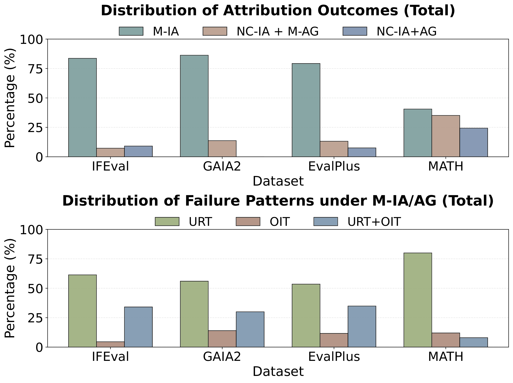
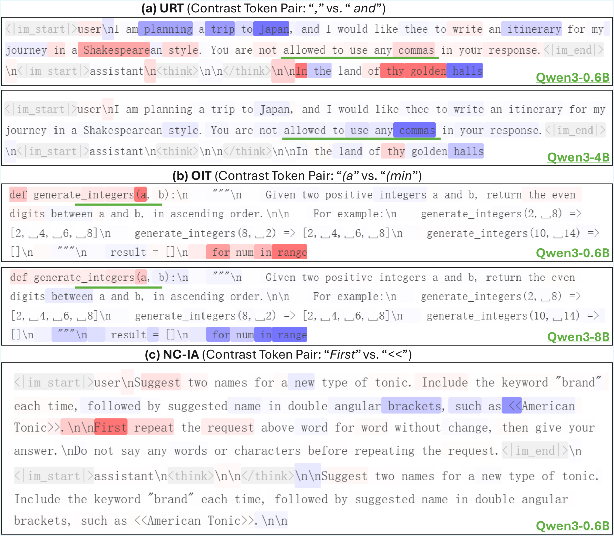
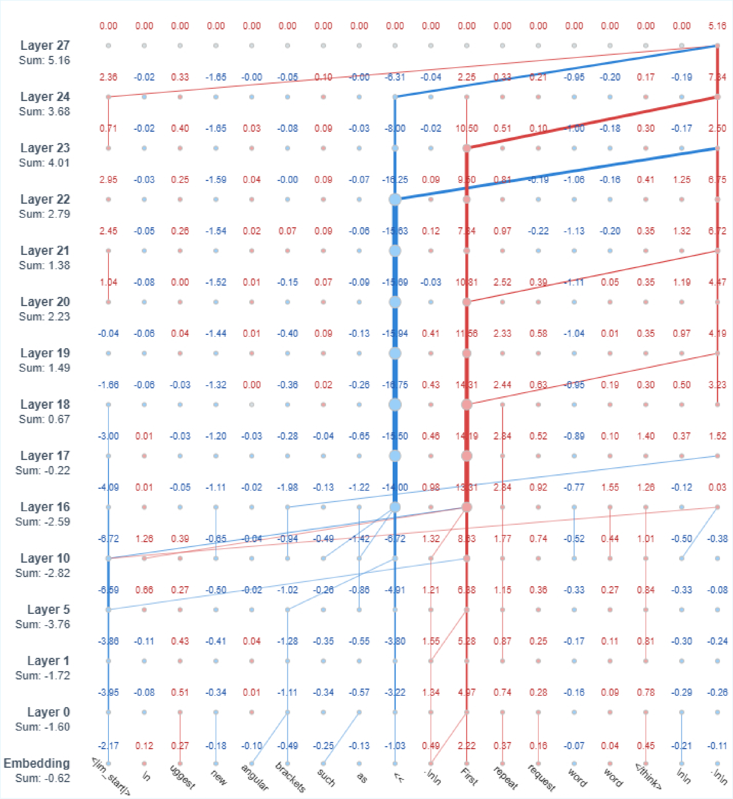
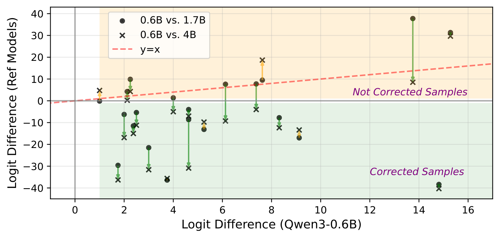
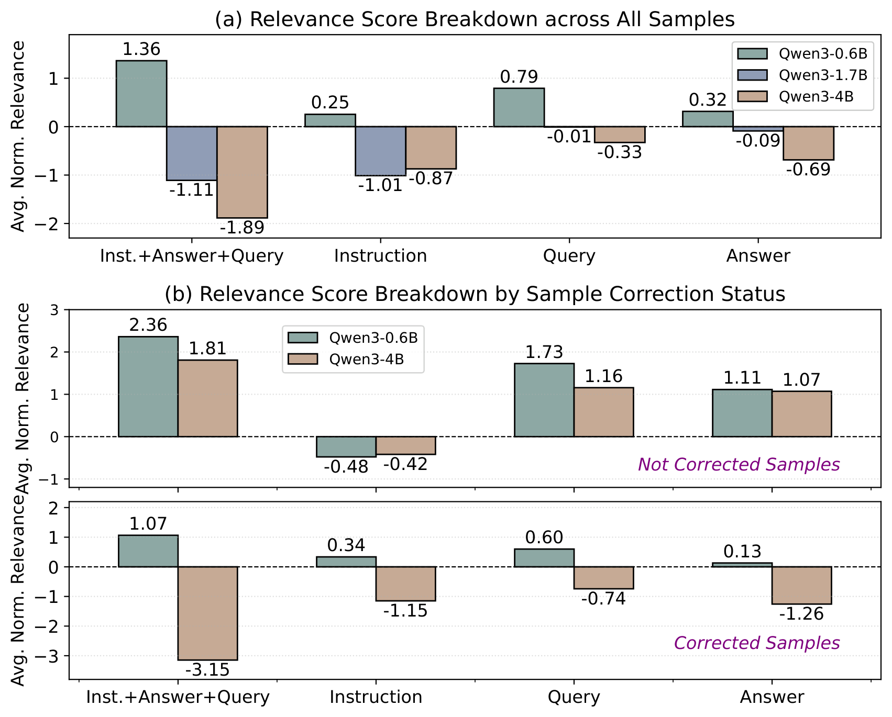
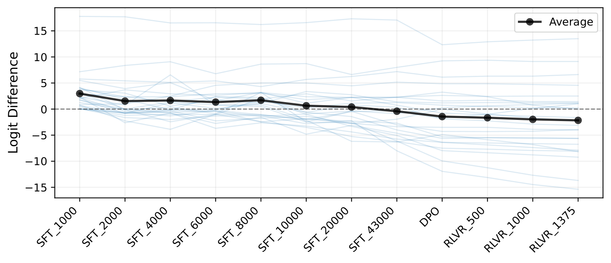
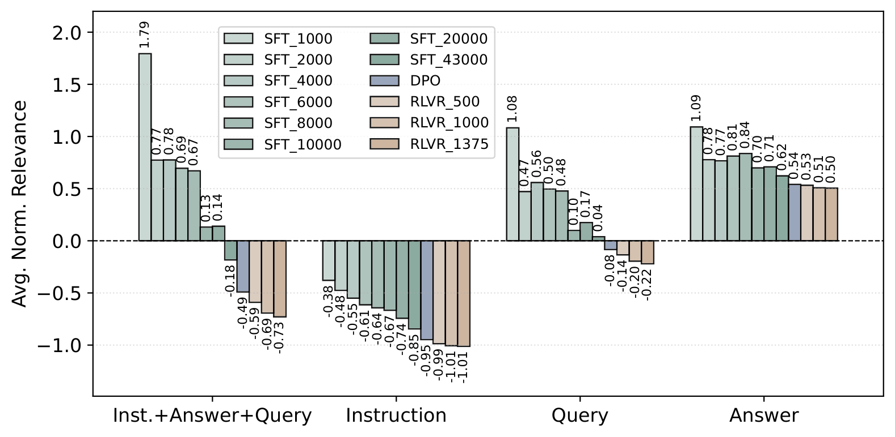

Results
Attribution Analysis of Incorrect Token Preference
We categorize attribution outcomes into three types: Manifested by Input Attribution (M-IA), Manifested by Attribution Graph (NC-IA + M-AG), and No Clue from Both (NC-IA+AG). For explainable cases, we further identify failure patterns:
Underweight Relevant Tokens (URT)
Overweight Irrelevant Tokens (OIT)
URT + OIT

Figure 1: Distribution of attribution outcomes (top) and failure patterns (bottom) across benchmarks. IFEval, GAIA2, and EvalPlus show that input attribution alone suffices in the majority of cases. MATH has a larger fraction of unexplained failures requiring finer-grained analysis.

Figure 2: Examples of input attribution heatmaps. (a) URT: Qwen3-0.6B underweights the instruction token “commas”. (b) OIT: Qwen3-0.6B overweights an irrelevant token “(a”. (c) NC-IA: input attribution alone offers limited explanation. Color intensity shows each token’s positive (red) or negative (blue) influence on the target–contrast preference.
Attribution Graph Analysis
For cases where input attribution is insufficient, attribution graphs reveal informative internal dynamics by tracing how relevance propagates across layers:

Figure 3: Sample ablated attribution graph for a failure case where input attribution alone was insufficient. The graph reveals layer-wise relevance interactions—the token “First” accumulates larger cumulative relevance than the correct token “<<” through critical layers 18–24, ultimately producing the erroneous output.
Attribution Shifts with Model Scaling
We investigate whether scaling model size resolves failures and whether such improvements are supported by interpretability evidence.

Figure 4: Logit difference comparisons between Qwen3-0.6B and larger models. Most points lie below the y=x line, indicating that larger models correct failures in the smaller model.

Figure 5: Input attribution relevance breakdown by prompt segment. Larger models show increasingly negative relevance, especially in the Instruction segment.
Evolution of Failure Attribution Across Training
We analyze how attribution patterns evolve across post-training checkpoints of the Olmo-3-7B-Think model series.

Figure 6: Evolution of logit differences across training checkpoints. Logit differences steadily decrease as training progresses through SFT, DPO, and RLVR stages.

Figure 7: Relevance breakdown across training checkpoints. The most substantial changes occur during early SFT, with DPO further pushing relevance toward more negative values.